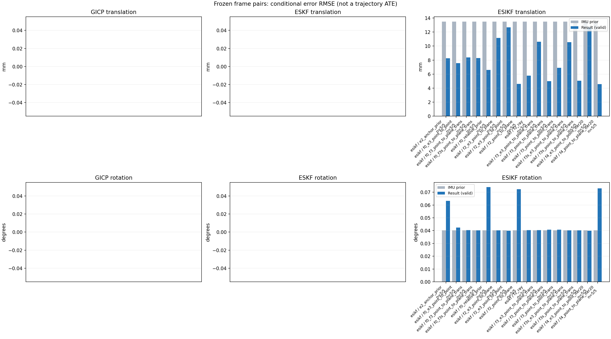

20261015_112659_forward · depth=disparity_cache · cache=51c0f6f96b0d1a71c1cb
模型视差：/home/ubuntu22/slam/SIO_SLAM/models/tensorrt/disp_896x448_fp16.plan；engine SHA256=604cf6ac1f705c877260711730dd5d2d58c2a21f3020c03c668401ef7fb1e768。输入为生产裁剪与光照处理后的 RGB 0..255；此实验使用原始浮点像素视差，不应用完整前端的邻域视差后处理。
原始 ONNX SHA256：e9f49736a65d68d06681add463866b6defdf78fdd7f4f50f6cc941b682fdc0bc。
代价体图改写验证：ONNX Runtime 固定随机特征输入，最大绝对误差 0；该项检查图改写，完整模型精度仍需由录制数据评估。
配准代码版本：744ac2d993ae629b0cc44a3b1d995e04ab4fad48；观测生成版本：744ac2d993ae629b0cc44a3b1d995e04ab4fad48。
固定图像对与纯 IMU 先验；ESKF 回放固定 GICP 观测，ESIKF 直接读取点云。真值只用于此报告。
同时查看 converged 与 solver_status：上游默认 Stereo 在 max_iter / stopped_at_minimum 时也可能置 converged=true。valid 表示输入检查通过，不表示精度提升。欧氏 GICP 未提供独立的点距 RMSE，该列显示 NaN。
误差按每对图像的锚点计算，单位 m / degrees。此处 RMSE 不是全序列 ATE；末帧受同一锚点条件约束。NIS 与条件马氏距离是诊断量，少量相关图像对不能用于宣称协方差已校准。
全部指标 CSV · R / P 矩阵 CSV · Stereo 求解逐轮 CSV · ESIKF 逐轮轨迹 CSV · 末轮 H / R / K_pose 矩阵 CSV · 配置快照 · 矢量图
unflagged 排除纯惯性先验平移误差超过 50 mm 的图像对；whitened 为误差按协方差白化后的每自由度均值，协方差与实际误差相符时约为 1。prior_whitened 用真值误差只检验先验 P；NIS 为 ESIKF 首轮 rᵀ(P+R)⁻¹r，不用真值，检验的是 P+R 的总量，单靠它分不开 P 与 R，偏差、错误对应和线性化误差也会抬高它。观测方差超过先验方差 1e+04 倍的方向视为不可观，从 NIS 及其自由度中去掉（nis_dof）。一致时 nis_per_dof 均值约 1、nis_over_chi2_median 中位数约 1；帧对少且共享序列，超出 95% 分位的比例只作参考。
| stage | method | variant | valid | total | result_translation_rmse_m | result_rotation_rmse_deg | result_translation_median_m | result_rotation_median_deg | result_translation_rmse_unflagged_m | result_rotation_rmse_unflagged_deg | improved_translation | improved_rotation | posterior_whitened_by_P_rot_mean | posterior_whitened_by_P_trans_mean | prior_whitened_by_P_rot_mean | prior_whitened_by_P_trans_mean | nis_per_dof_mean | nis_over_chi2_median_median | nis_exceeds_chi2_95_fraction |
|---|---|---|---|---|---|---|---|---|---|---|---|---|---|---|---|---|---|---|---|
| esikf | esikf | e2_anchor_prior | 5 | 5 | 0.0082678 | 0.06323 | 0.00496 | 0.016583 | 0.0082678 | 0.06323 | 2 | 0 | 152.08 | 120.53 | 108.79 | 20.642 | 7.4753 | 5.2761 | 1 |
| esikf | esikf | f0_e3_point_to_point | 5 | 5 | 0.0075607 | 0.042454 | 0.0033246 | 0.011045 | 0.0075607 | 0.042454 | 3 | 3 | 2.4712 | 1.3531 | 2.1806 | 0.24169 | 0.10218 | 0.11591 | 0 |
| esikf | esikf | f0_f3_point_to_plane_trans | 5 | 5 | 0.0083846 | 0.040394 | 0.0066349 | 0.011236 | 0.0083846 | 0.040394 | 2 | 3 | 2.1794 | 39.703 | 2.1806 | 0.24169 | 12.575 | 8.9326 | 0.6 |
| esikf | esikf | f0_f3s_point_to_plane_trans | 5 | 5 | 0.008292 | 0.040272 | 0.0067379 | 0.011322 | 0.008292 | 0.040272 | 2 | 0 | 2.1806 | 38.737 | 2.1806 | 0.24169 | 12.575 | 8.9326 | 0.6 |
| esikf | esikf | f0_relative_prior | 5 | 5 | 0.0065911 | 0.073978 | 0.0057313 | 0.017867 | 0.0065911 | 0.073978 | 2 | 0 | 57.046 | 69.242 | 2.1806 | 0.24169 | 3.5191 | 2.1564 | 0.4 |
| esikf | esikf | f2_e3_point_to_plane | 5 | 5 | 0.011163 | 0.040309 | 0.0045231 | 0.011446 | 0.011163 | 0.040309 | 4 | 2 | 108.89 | 20.75 | 108.79 | 20.642 | 0.71071 | 0.95975 | 0 |
| esikf | esikf | f2_e3_point_to_point | 5 | 5 | 0.012667 | 0.039924 | 0.004589 | 0.011378 | 0.012667 | 0.039924 | 5 | 3 | 109.19 | 22.412 | 108.79 | 20.642 | 0.16976 | 0.19194 | 0 |
| esikf | esikf | f2_point_to_plane | 5 | 5 | 0.0045939 | 0.072352 | 0.0042547 | 0.012791 | 0.0045939 | 0.072352 | 3 | 1 | 116.4 | 24.501 | 108.79 | 20.642 | 13.525 | 12.714 | 1 |
| esikf | esikf | f2_ray | 5 | 5 | 0.0057945 | 0.040417 | 0.0026998 | 0.012872 | 0.0057945 | 0.040417 | 3 | 2 | 110.04 | 24.83 | 108.79 | 20.642 | 28.045 | 35.846 | 1 |
| esikf | esikf | f3_e3_point_to_plane_trans | 5 | 5 | 0.010611 | 0.040329 | 0.0045129 | 0.011532 | 0.010611 | 0.040329 | 4 | 1 | 108.87 | 20.159 | 108.79 | 20.642 | 2.0871 | 2.3673 | 0.4 |
| esikf | esikf | f3_point_to_plane_trans | 5 | 5 | 0.0049972 | 0.040763 | 0.0048918 | 0.013592 | 0.0049972 | 0.040763 | 2 | 0 | 111.53 | 27.357 | 108.79 | 20.642 | 40.673 | 38.445 | 1 |
| esikf | esikf | f3_point_to_point_trans | 5 | 5 | 0.0069007 | 0.040805 | 0.0076922 | 0.012875 | 0.0069007 | 0.040805 | 2 | 1 | 112.06 | 196.83 | 108.79 | 20.642 | 9.8472 | 17.597 | 0.8 |
| esikf | esikf | f3s_e3_point_to_plane_trans | 5 | 5 | 0.010562 | 0.040272 | 0.0045129 | 0.011322 | 0.010562 | 0.040272 | 4 | 0 | 108.79 | 20.12 | 108.79 | 20.642 | 2.0871 | 2.3673 | 0.4 |
| esikf | esikf | f3s_point_to_plane_trans | 5 | 5 | 0.005063 | 0.040272 | 0.0048813 | 0.011322 | 0.005063 | 0.040272 | 2 | 0 | 108.79 | 28.226 | 108.79 | 20.642 | 40.673 | 38.445 | 1 |
| esikf | esikf | f4_e3_point_to_point_iter20 | 5 | 5 | 0.012667 | 0.039924 | 0.004589 | 0.011378 | 0.012667 | 0.039924 | 5 | 3 | 109.19 | 22.412 | 108.79 | 20.642 | 0.16976 | 0.19194 | 0 |
| esikf | esikf | f4_point_to_plane_iter20 | 5 | 5 | 0.0045863 | 0.073105 | 0.0042547 | 0.012791 | 0.0045863 | 0.073105 | 3 | 1 | 116.42 | 24.44 | 108.79 | 20.642 | 13.525 | 12.714 | 1 |

| stage | case | method | variant | status | solver_status | inliers | converged | covariance_convention | covariance_from_hessian | fitness | registration_rmse_m | prior_trans_error_m | result_trans_error_m | prior_rot_error_deg | result_rot_error_deg | prior_flagged | R_rot_trace_rad2 | R_pos_trace_m2 | nis_regularized | posterior_whitened_by_P_rot | posterior_whitened_by_P_trans | prior_whitened_by_P_rot | prior_whitened_by_P_trans | nis_per_dof | nis_dof |
|---|---|---|---|---|---|---|---|---|---|---|---|---|---|---|---|---|---|---|---|---|---|---|---|---|---|
| esikf | static_start | esikf | e2_anchor_prior | updated | converged | 17220 | 1 | 1 | 0 | 0 | 9.0452e-05 | 0.00045539 | 0.0025908 | 0.0079136 | 0 | 1.0921e-07 | 8.6775e-07 | nan | 1.0409 | 1.9704 | 0.060771 | 0.083229 | 4.1386 | 6 | |
| esikf | static_start | esikf | f0_relative_prior | updated | converged | 17251 | 1 | 1 | 0 | 0 | 9.0452e-05 | 0.0039372 | 0.0025908 | 0.011659 | 0 | 1.0859e-07 | 8.592e-07 | nan | 2.1352 | 21.585 | 0.060745 | 0.05211 | 1.7066 | 6 | |
| esikf | static_start | esikf | f2_point_to_plane | updated | converged | 17220 | 1 | 1 | 0 | 0 | 9.0452e-05 | 0.00043165 | 0.0025908 | 0.0094379 | 0 | 7.6374e-07 | 3.4109e-06 | nan | 0.88711 | 1.3021 | 0.060771 | 0.083229 | 7.1095 | 6 | |
| esikf | static_start | esikf | f2_ray | updated | converged | 17220 | 1 | 1 | 0 | 0 | 9.0452e-05 | 0.00056141 | 0.0025908 | 0.0095143 | 0 | 0.0094377 | 1.2738e-05 | nan | 0.87738 | 2.2577 | 0.060771 | 0.083229 | 14.829 | 3 | |
| esikf | static_start | esikf | f3_point_to_point_trans | updated | converged | 17220 | 1 | 1 | 0 | 0 | 9.0452e-05 | 0.00077243 | 0.0025908 | 0.010526 | 0 | 0.10918 | 8.6716e-07 | nan | 1.2229 | 8.9408 | 0.060771 | 0.083229 | 17.03 | 3 | |
| esikf | static_start | esikf | f3_point_to_plane_trans | updated | converged | 17220 | 1 | 1 | 0 | 0 | 9.0452e-05 | 0.00046191 | 0.0025908 | 0.0070565 | 0 | 0.76377 | 3.41e-06 | nan | 0.47626 | 2.0662 | 0.060771 | 0.083229 | 22.007 | 3 | |
| esikf | static_start | esikf | f0_f3_point_to_plane_trans | updated_not_converged | max_iterations | 17448 | 0 | 1 | 0 | 0 | 9.0452e-05 | 0.0060703 | 0.0025908 | 0.0026002 | 0 | 0.73314 | 3.1581e-06 | nan | 0.061185 | 25.523 | 0.060745 | 0.05211 | 11.891 | 3 | |
| esikf | static_start | esikf | f3s_point_to_plane_trans | updated | converged | 17220 | 1 | 1 | 0 | 0 | 9.0452e-05 | 0.00047243 | 0.0025908 | 0.0025908 | 0 | 0.76388 | 3.4095e-06 | nan | 0.060771 | 2.1448 | 0.060771 | 0.083229 | 22.007 | 3 | |
| esikf | static_start | esikf | f0_f3s_point_to_plane_trans | updated | converged | 17482 | 1 | 1 | 0 | 0 | 9.0452e-05 | 0.0059027 | 0.0025908 | 0.0025908 | 0 | 0.73222 | 3.1517e-06 | nan | 0.060745 | 24.41 | 0.060745 | 0.05211 | 11.891 | 3 | |
| esikf | static_start | esikf | f4_point_to_plane_iter20 | updated | converged | 17220 | 1 | 1 | 0 | 0 | 9.0452e-05 | 0.00043165 | 0.0025908 | 0.0094379 | 0 | 7.6374e-07 | 3.4109e-06 | nan | 0.88711 | 1.3021 | 0.060771 | 0.083229 | 7.1095 | 6 | |
| esikf | static_start | esikf | f2_e3_point_to_point | updated | converged | 17220 | 1 | 1 | 0 | 0 | 9.0452e-05 | 8.9135e-05 | 0.0025908 | 0.0025037 | 0 | 1.2139e-05 | 7.2072e-05 | nan | 0.057361 | 0.084882 | 0.060771 | 0.083229 | 0.063759 | 6 | |
| esikf | static_start | esikf | f0_e3_point_to_point | updated | converged | 17240 | 1 | 1 | 0 | 0 | 9.0452e-05 | 0.0033246 | 0.0025908 | 0.0026464 | 0 | 1.209e-05 | 7.1799e-05 | nan | 0.063644 | 0.25564 | 0.060745 | 0.05211 | 0.026523 | 6 | |
| esikf | static_start | esikf | f2_e3_point_to_plane | updated | converged | 17220 | 1 | 1 | 0 | 0 | 9.0452e-05 | 9.2438e-05 | 0.0025908 | 0.0024442 | 0 | 4.4594e-05 | 0.00012201 | nan | 0.054215 | 0.086521 | 0.060771 | 0.083229 | 0.17298 | 6 | |
| esikf | static_start | esikf | f3_e3_point_to_plane_trans | updated | converged | 17220 | 1 | 1 | 0 | 0 | 9.0452e-05 | 9.6014e-05 | 0.0025908 | 0.0025007 | 0 | 0.76321 | 0.00012201 | nan | 0.05663 | 0.096894 | 0.060771 | 0.083229 | 0.65473 | 3 | |
| esikf | static_start | esikf | f3s_e3_point_to_plane_trans | updated | converged | 17220 | 1 | 1 | 0 | 0 | 9.0452e-05 | 9.6014e-05 | 0.0025908 | 0.0025908 | 0 | 0.76321 | 0.00012201 | nan | 0.060771 | 0.096894 | 0.060771 | 0.083229 | 0.65473 | 3 | |
| esikf | static_start | esikf | f4_e3_point_to_point_iter20 | updated | converged | 17220 | 1 | 1 | 0 | 0 | 9.0452e-05 | 8.9135e-05 | 0.0025908 | 0.0025037 | 0 | 1.2139e-05 | 7.2072e-05 | nan | 0.057361 | 0.084882 | 0.060771 | 0.083229 | 0.063759 | 6 | |
| esikf | sync_motion | esikf | e2_anchor_prior | updated | converged | 16169 | 1 | 1 | 0 | 0 | 0.0013397 | 0.0031187 | 0.011322 | 0.012216 | 0 | 1.1537e-07 | 9.4798e-07 | nan | 24.368 | 49.154 | 4.6596 | 0.24114 | 4.4246 | 6 | |
| esikf | sync_motion | esikf | f0_relative_prior | updated | converged | 16163 | 1 | 1 | 0 | 0 | 0.0013397 | 0.0036905 | 0.011322 | 0.017867 | 0 | 1.1548e-07 | 9.4912e-07 | nan | 8.2466 | 48.038 | 1.0928 | 5.5711e-05 | 4.0868 | 6 | |
| esikf | sync_motion | esikf | f2_point_to_plane | updated | converged | 16131 | 1 | 1 | 0 | 0 | 0.0013397 | 0.0039743 | 0.011322 | 0.012791 | 0 | 7.9165e-07 | 3.7185e-06 | nan | 20.118 | 17.956 | 4.6596 | 0.24114 | 11.333 | 6 | |
| esikf | sync_motion | esikf | f2_ray | updated_not_converged | max_iterations | 16190 | 0 | 1 | 0 | 0 | 0.0013397 | 0.0021565 | 0.011322 | 0.012872 | 0 | 0.0067263 | 1.089e-05 | nan | 12.688 | 3.2801 | 4.6596 | 0.24114 | 28.27 | 3 | |
| esikf | sync_motion | esikf | f3_point_to_point_trans | updated_not_converged | max_iterations | 16308 | 0 | 1 | 0 | 0 | 0.0013397 | 0.0082328 | 0.011322 | 0.012875 | 0 | 0.11226 | 9.0122e-07 | nan | 20.512 | 479.36 | 4.6596 | 0.24114 | 13.878 | 3 | |
| esikf | sync_motion | esikf | f3_point_to_plane_trans | updated_not_converged | max_iterations | 16183 | 0 | 1 | 0 | 0 | 0.0013397 | 0.0044643 | 0.011322 | 0.013592 | 0 | 0.79002 | 3.6612e-06 | nan | 18.88 | 35.676 | 4.6596 | 0.24114 | 42.006 | 3 | |
| esikf | sync_motion | esikf | f0_f3_point_to_plane_trans | updated | converged | 16157 | 1 | 1 | 0 | 0 | 0.0013397 | 0.0054157 | 0.011322 | 0.011236 | 0 | 0.79025 | 3.6718e-06 | nan | 1.0779 | 40.411 | 1.0928 | 5.5711e-05 | 40.567 | 3 | |
| esikf | sync_motion | esikf | f3s_point_to_plane_trans | updated_not_converged | max_iterations | 16170 | 0 | 1 | 0 | 0 | 0.0013397 | 0.0047335 | 0.011322 | 0.011322 | 0 | 0.78888 | 3.6655e-06 | nan | 4.6596 | 39.403 | 4.6596 | 0.24114 | 42.006 | 3 | |
| esikf | sync_motion | esikf | f0_f3s_point_to_plane_trans | updated_not_converged | max_iterations | 16163 | 0 | 1 | 0 | 0 | 0.0013397 | 0.0053624 | 0.011322 | 0.011322 | 0 | 0.79188 | 3.6731e-06 | nan | 1.0928 | 40.113 | 1.0928 | 5.5711e-05 | 40.567 | 3 | |
| esikf | sync_motion | esikf | f4_point_to_plane_iter20 | updated | converged | 16131 | 1 | 1 | 0 | 0 | 0.0013397 | 0.0039743 | 0.011322 | 0.012791 | 0 | 7.9165e-07 | 3.7185e-06 | nan | 20.118 | 17.956 | 4.6596 | 0.24114 | 11.333 | 6 | |
| esikf | sync_motion | esikf | f2_e3_point_to_point | updated | converged | 16239 | 1 | 1 | 0 | 0 | 0.0013397 | 0.0011579 | 0.011322 | 0.011378 | 0 | 1.2614e-05 | 7.6452e-05 | nan | 5.8035 | 0.20954 | 4.6596 | 0.24114 | 0.16705 | 5 | |
| esikf | sync_motion | esikf | f0_e3_point_to_point | updated | converged | 16185 | 1 | 1 | 0 | 0 | 0.0013397 | 0.0018687 | 0.011322 | 0.011045 | 0 | 1.2748e-05 | 7.7769e-05 | nan | 1.0573 | 0.17772 | 1.0928 | 5.5711e-05 | 0.13249 | 6 | |
| esikf | sync_motion | esikf | f2_e3_point_to_plane | updated | converged | 16238 | 1 | 1 | 0 | 0 | 0.0013397 | 0.0011679 | 0.011322 | 0.011446 | 0 | 4.5438e-05 | 0.00012826 | nan | 5.3473 | 0.21908 | 4.6596 | 0.24114 | 0.64832 | 4 | |
| esikf | sync_motion | esikf | f3_e3_point_to_plane_trans | updated | converged | 16236 | 1 | 1 | 0 | 0 | 0.0013397 | 0.0012671 | 0.011322 | 0.011532 | 0 | 0.7774 | 0.0001281 | nan | 5.3478 | 0.2729 | 4.6596 | 0.24114 | 1.867 | 3 | |
| esikf | sync_motion | esikf | f3s_e3_point_to_plane_trans | updated | converged | 16236 | 1 | 1 | 0 | 0 | 0.0013397 | 0.0012668 | 0.011322 | 0.011322 | 0 | 0.77762 | 0.00012811 | nan | 4.6596 | 0.27267 | 4.6596 | 0.24114 | 1.867 | 3 | |
| esikf | sync_motion | esikf | f4_e3_point_to_point_iter20 | updated | converged | 16239 | 1 | 1 | 0 | 0 | 0.0013397 | 0.0011579 | 0.011322 | 0.011378 | 0 | 1.2614e-05 | 7.6452e-05 | nan | 5.8035 | 0.20954 | 4.6596 | 0.24114 | 0.16705 | 5 | |
| esikf | main_motion | esikf | e2_anchor_prior | updated | converged | 17259 | 1 | 1 | 0 | 0 | 0.0045997 | 0.00496 | 0.029347 | 0.0321 | 0 | 9.8484e-08 | 1.0023e-06 | nan | 264.9 | 103.66 | 255.23 | 15.225 | 4.7029 | 6 | |
| esikf | main_motion | esikf | f0_relative_prior | updated_not_converged | max_iterations | 17285 | 0 | 1 | 0 | 0 | 0.0045997 | 0.0057313 | 0.029347 | 0.03126 | 0 | 9.8259e-08 | 9.9948e-07 | nan | 18.877 | 77.779 | 7.7933 | 0.29202 | 1.9221 | 6 | |
| esikf | main_motion | esikf | f2_point_to_plane | updated | converged | 17240 | 1 | 1 | 0 | 0 | 0.0045997 | 0.0042547 | 0.029347 | 0.028926 | 0 | 7.2279e-07 | 3.7914e-06 | nan | 248.99 | 26.204 | 255.23 | 15.225 | 19.207 | 6 | |
| esikf | main_motion | esikf | f2_ray | updated | converged | 17236 | 1 | 1 | 0 | 0 | 0.0045997 | 0.0026998 | 0.029347 | 0.029309 | 0 | 0.0062075 | 1.2801e-05 | nan | 254.54 | 7.4119 | 255.23 | 15.225 | 23.645 | 3 | |
| esikf | main_motion | esikf | f3_point_to_point_trans | updated_not_converged | max_iterations | 17269 | 0 | 1 | 0 | 0 | 0.0045997 | 0.0076922 | 0.029347 | 0.029341 | 0 | 0.096646 | 9.7163e-07 | nan | 255.15 | 330.34 | 255.23 | 15.225 | 2.6699 | 3 | |
| esikf | main_motion | esikf | f3_point_to_plane_trans | updated | converged | 17250 | 1 | 1 | 0 | 0 | 0.0045997 | 0.0048918 | 0.029347 | 0.02938 | 0 | 0.7217 | 3.8724e-06 | nan | 255.57 | 33.577 | 255.23 | 15.225 | 30.32 | 3 | |
| esikf | main_motion | esikf | f0_f3_point_to_plane_trans | updated_not_converged | max_iterations | 17340 | 0 | 1 | 0 | 0 | 0.0045997 | 0.012464 | 0.029347 | 0.029166 | 0 | 0.7139 | 3.6226e-06 | nan | 7.8258 | 74.251 | 7.7933 | 0.29202 | 2.5248 | 3 | |
| esikf | main_motion | esikf | f3s_point_to_plane_trans | updated | converged | 17252 | 1 | 1 | 0 | 0 | 0.0045997 | 0.0048813 | 0.029347 | 0.029347 | 0 | 0.7213 | 3.8743e-06 | nan | 255.23 | 33.407 | 255.23 | 15.225 | 30.32 | 3 | |
| esikf | main_motion | esikf | f0_f3s_point_to_plane_trans | updated_not_converged | max_iterations | 17346 | 0 | 1 | 0 | 0 | 0.0045997 | 0.012239 | 0.029347 | 0.029347 | 0 | 0.70738 | 3.6173e-06 | nan | 7.7933 | 71.19 | 7.7933 | 0.29202 | 2.5248 | 3 | |
| esikf | main_motion | esikf | f4_point_to_plane_iter20 | updated | converged | 17240 | 1 | 1 | 0 | 0 | 0.0045997 | 0.0042547 | 0.029347 | 0.028926 | 0 | 7.2279e-07 | 3.7914e-06 | nan | 248.99 | 26.204 | 255.23 | 15.225 | 19.207 | 6 | |
| esikf | main_motion | esikf | f2_e3_point_to_point | updated | converged | 17261 | 1 | 1 | 0 | 0 | 0.0045997 | 0.004589 | 0.029347 | 0.02932 | 0 | 1.1074e-05 | 8.5525e-05 | nan | 255.03 | 15.624 | 255.23 | 15.225 | 0.19957 | 5 | |
| esikf | main_motion | esikf | f0_e3_point_to_point | updated_not_converged | max_iterations | 17244 | 0 | 1 | 0 | 0 | 0.0045997 | 0.0032831 | 0.029347 | 0.028612 | 0 | 1.1055e-05 | 8.5019e-05 | nan | 7.7796 | 1.0154 | 7.7933 | 0.29202 | 0.10332 | 6 | |
| esikf | main_motion | esikf | f2_e3_point_to_plane | updated | converged | 17259 | 1 | 1 | 0 | 0 | 0.0045997 | 0.0045231 | 0.029347 | 0.029335 | 0 | 4.3323e-05 | 0.00014193 | nan | 255.05 | 15.073 | 255.23 | 15.225 | 0.80539 | 4 | |
| esikf | main_motion | esikf | f3_e3_point_to_plane_trans | updated | converged | 17260 | 1 | 1 | 0 | 0 | 0.0045997 | 0.0045129 | 0.029347 | 0.029347 | 0 | 0.74127 | 0.00014193 | nan | 255.23 | 15.006 | 255.23 | 15.225 | 1.3585 | 3 | |
| esikf | main_motion | esikf | f3s_e3_point_to_plane_trans | updated | converged | 17260 | 1 | 1 | 0 | 0 | 0.0045997 | 0.0045129 | 0.029347 | 0.029347 | 0 | 0.74128 | 0.00014193 | nan | 255.23 | 15.006 | 255.23 | 15.225 | 1.3585 | 3 | |
| esikf | main_motion | esikf | f4_e3_point_to_point_iter20 | updated | converged | 17261 | 1 | 1 | 0 | 0 | 0.0045997 | 0.004589 | 0.029347 | 0.02932 | 0 | 1.1074e-05 | 8.5525e-05 | nan | 255.03 | 15.624 | 255.23 | 15.225 | 0.19957 | 5 | |
| esikf | main_motion_long | esikf | e2_anchor_prior | updated_not_converged | max_iterations | 15607 | 0 | 1 | 0 | 0 | 0.028091 | 0.014982 | 0.084242 | 0.13592 | 0 | 1.2815e-07 | 1.2788e-06 | nan | 464.11 | 271.55 | 279.88 | 15.363 | 7.3902 | 6 | |
| esikf | main_motion_long | esikf | f0_relative_prior | updated_not_converged | max_iterations | 15603 | 0 | 1 | 0 | 0 | 0.028091 | 0.0093419 | 0.084242 | 0.16056 | 0 | 1.2398e-07 | 1.1939e-06 | nan | 253.33 | 72.101 | 1.8103 | 0.38024 | 1.4292 | 6 | |
| esikf | main_motion_long | esikf | f2_point_to_plane | updated_not_converged | max_iterations | 15479 | 0 | 1 | 0 | 0 | 0.028091 | 0.0044689 | 0.084242 | 0.15821 | 0 | 9.6203e-07 | 4.8841e-06 | nan | 308.32 | 11.013 | 279.88 | 15.363 | 11.208 | 6 | |
| esikf | main_motion_long | esikf | f2_ray | updated_not_converged | max_iterations | 15544 | 0 | 1 | 0 | 0 | 0.028091 | 0.0095655 | 0.084242 | 0.083819 | 0 | 0.0064445 | 4.465e-05 | nan | 278.25 | 32.5 | 279.88 | 15.363 | 37.493 | 4 | |
| esikf | main_motion_long | esikf | f3_point_to_point_trans | updated_not_converged | max_iterations | 15555 | 0 | 1 | 0 | 0 | 0.028091 | 0.0079304 | 0.084242 | 0.084594 | 0 | 0.12247 | 1.1896e-06 | nan | 279.64 | 75.514 | 279.88 | 15.363 | 1.0452 | 3 | |
| esikf | main_motion_long | esikf | f3_point_to_plane_trans | updated_not_converged | max_iterations | 15551 | 0 | 1 | 0 | 0 | 0.028091 | 0.0064115 | 0.084242 | 0.084737 | 0 | 0.95963 | 4.8056e-06 | nan | 279.04 | 20.129 | 279.88 | 15.363 | 6.476 | 3 | |
| esikf | main_motion_long | esikf | f0_f3_point_to_plane_trans | updated_not_converged | max_iterations | 15539 | 0 | 1 | 0 | 0 | 0.028091 | 0.0066349 | 0.084242 | 0.084658 | 0 | 0.98115 | 4.8766e-06 | nan | 1.8585 | 17.229 | 1.8103 | 0.38024 | 0.84538 | 3 | |
| esikf | main_motion_long | esikf | f3s_point_to_plane_trans | updated_not_converged | max_iterations | 15551 | 0 | 1 | 0 | 0 | 0.028091 | 0.0064878 | 0.084242 | 0.084242 | 0 | 0.96215 | 4.7903e-06 | nan | 279.88 | 20.722 | 279.88 | 15.363 | 6.476 | 3 | |
| esikf | main_motion_long | esikf | f0_f3s_point_to_plane_trans | updated_not_converged | max_iterations | 15536 | 0 | 1 | 0 | 0 | 0.028091 | 0.0067379 | 0.084242 | 0.084242 | 0 | 0.9814 | 4.8778e-06 | nan | 1.8103 | 17.641 | 1.8103 | 0.38024 | 0.84538 | 3 | |
| esikf | main_motion_long | esikf | f4_point_to_plane_iter20 | updated | converged | 15475 | 1 | 1 | 0 | 0 | 0.028091 | 0.0044298 | 0.084242 | 0.15993 | 0 | 9.608e-07 | 4.8872e-06 | nan | 308.42 | 10.708 | 279.88 | 15.363 | 11.208 | 6 | |
| esikf | main_motion_long | esikf | f2_e3_point_to_point | updated | converged | 15622 | 1 | 1 | 0 | 0 | 0.028091 | 0.026124 | 0.084242 | 0.083411 | 0 | 1.5027e-05 | 0.0001178 | nan | 280.97 | 23.286 | 279.88 | 15.363 | 0.15438 | 6 | |
| esikf | main_motion_long | esikf | f0_e3_point_to_point | updated_not_converged | max_iterations | 15626 | 0 | 1 | 0 | 0 | 0.028091 | 0.01364 | 0.084242 | 0.089733 | 0 | 1.4018e-05 | 0.00010377 | nan | 3.3366 | 2.996 | 1.8103 | 0.38024 | 0.10094 | 6 | |
| esikf | main_motion_long | esikf | f2_e3_point_to_plane | updated | converged | 15624 | 1 | 1 | 0 | 0 | 0.028091 | 0.022489 | 0.084242 | 0.08432 | 0 | 5.73e-05 | 0.00017552 | nan | 279.96 | 16.804 | 279.88 | 15.363 | 0.87431 | 5 | |
| esikf | main_motion_long | esikf | f3_e3_point_to_plane_trans | updated | converged | 15595 | 1 | 1 | 0 | 0 | 0.028091 | 0.021126 | 0.084242 | 0.084352 | 0 | 0.98334 | 0.00018066 | nan | 279.64 | 14.816 | 279.88 | 15.363 | 2.605 | 3 | |
| esikf | main_motion_long | esikf | f3s_e3_point_to_plane_trans | updated | converged | 15590 | 1 | 1 | 0 | 0 | 0.028091 | 0.021005 | 0.084242 | 0.084242 | 0 | 0.98846 | 0.00018394 | nan | 279.88 | 14.626 | 279.88 | 15.363 | 2.605 | 3 | |
| esikf | main_motion_long | esikf | f4_e3_point_to_point_iter20 | updated | converged | 15622 | 1 | 1 | 0 | 0 | 0.028091 | 0.026124 | 0.084242 | 0.083411 | 0 | 1.5027e-05 | 0.0001178 | nan | 280.97 | 23.286 | 279.88 | 15.363 | 0.15438 | 6 | |
| esikf | static_end | esikf | e2_anchor_prior | updated_not_converged | max_iterations | 12236 | 0 | 1 | 0 | 0 | 0.0099324 | 0.0090982 | 0.0040144 | 0.016583 | 0 | 2.2132e-07 | 1.4032e-06 | nan | 5.987 | 176.33 | 4.1031 | 72.298 | 16.72 | 6 | |
| esikf | static_end | esikf | f0_relative_prior | updated_not_converged | max_iterations | 12195 | 0 | 1 | 0 | 0 | 0.0099324 | 0.0082445 | 0.0040144 | 0.01237 | 0 | 2.1495e-07 | 1.3229e-06 | nan | 2.643 | 126.71 | 0.14582 | 0.48401 | 8.4507 | 6 | |
| esikf | static_end | esikf | f2_point_to_plane | updated | converged | 12194 | 1 | 1 | 0 | 0 | 0.0099324 | 0.0071739 | 0.0040144 | 0.0074083 | 0 | 1.2018e-06 | 5.1912e-06 | nan | 3.6921 | 66.031 | 4.1031 | 72.298 | 18.765 | 6 | |
| esikf | static_end | esikf | f2_ray | updated | converged | 12209 | 1 | 1 | 0 | 0 | 0.0099324 | 0.0080078 | 0.0040144 | 0.0051772 | 0 | 0.010036 | 1.3523e-05 | nan | 3.8722 | 78.702 | 4.1031 | 72.298 | 35.987 | 3 | |
| esikf | static_end | esikf | f3_point_to_point_trans | updated | converged | 12186 | 1 | 1 | 0 | 0 | 0.0099324 | 0.0069035 | 0.0040144 | 0.0056128 | 0 | 0.22021 | 1.3854e-06 | nan | 3.7775 | 90.009 | 4.1031 | 72.298 | 14.613 | 3 | |
| esikf | static_end | esikf | f3_point_to_plane_trans | updated | converged | 12161 | 1 | 1 | 0 | 0 | 0.0099324 | 0.0062989 | 0.0040144 | 0.0054826 | 0 | 1.2218 | 5.1646e-06 | nan | 3.681 | 45.339 | 4.1031 | 72.298 | 102.55 | 3 | |
| esikf | static_end | esikf | f0_f3_point_to_plane_trans | updated | converged | 12239 | 1 | 1 | 0 | 0 | 0.0099324 | 0.0092705 | 0.0040144 | 0.0027787 | 0 | 1.1061 | 4.4722e-06 | nan | 0.073739 | 41.101 | 0.14582 | 0.48401 | 7.0448 | 3 | |
| esikf | static_end | esikf | f3s_point_to_plane_trans | updated_not_converged | max_iterations | 12164 | 0 | 1 | 0 | 0 | 0.0099324 | 0.0062947 | 0.0040144 | 0.0040144 | 0 | 1.2232 | 5.1599e-06 | nan | 4.1031 | 45.452 | 4.1031 | 72.298 | 102.55 | 3 | |
| esikf | static_end | esikf | f0_f3s_point_to_plane_trans | updated_not_converged | max_iterations | 12238 | 0 | 1 | 0 | 0 | 0.0099324 | 0.0092192 | 0.0040144 | 0.0040144 | 0 | 1.1084 | 4.4979e-06 | nan | 0.14582 | 40.33 | 0.14582 | 0.48401 | 7.0448 | 3 | |
| esikf | static_end | esikf | f4_point_to_plane_iter20 | updated | converged | 12194 | 1 | 1 | 0 | 0 | 0.0099324 | 0.0071739 | 0.0040144 | 0.0074083 | 0 | 1.2018e-06 | 5.1912e-06 | nan | 3.6921 | 66.031 | 4.1031 | 72.298 | 18.765 | 6 | |
| esikf | static_end | esikf | f2_e3_point_to_point | updated | converged | 12255 | 1 | 1 | 0 | 0 | 0.0099324 | 0.0098697 | 0.0040144 | 0.0040896 | 0 | 2.5054e-05 | 0.00012201 | nan | 4.0688 | 72.856 | 4.1031 | 72.298 | 0.26404 | 5 | |
| esikf | static_end | esikf | f0_e3_point_to_point | updated_not_converged | max_iterations | 12216 | 0 | 1 | 0 | 0 | 0.0099324 | 0.0086276 | 0.0040144 | 0.0034931 | 0 | 2.3985e-05 | 0.00011057 | nan | 0.11902 | 2.3209 | 0.14582 | 0.48401 | 0.14764 | 6 | |
| esikf | static_end | esikf | f2_e3_point_to_plane | updated | converged | 12251 | 1 | 1 | 0 | 0 | 0.0099324 | 0.0097724 | 0.0040144 | 0.0040748 | 0 | 7.1563e-05 | 0.00019325 | nan | 4.0651 | 71.566 | 4.1031 | 72.298 | 1.0525 | 4 | |
| esikf | static_end | esikf | f3_e3_point_to_plane_trans | updated | converged | 12249 | 1 | 1 | 0 | 0 | 0.0099324 | 0.0097281 | 0.0040144 | 0.0040566 | 0 | 1.2242 | 0.0001929 | nan | 4.0774 | 70.601 | 4.1031 | 72.298 | 3.9503 | 3 | |
| esikf | static_end | esikf | f3s_e3_point_to_plane_trans | updated | converged | 12247 | 1 | 1 | 0 | 0 | 0.0099324 | 0.0097278 | 0.0040144 | 0.0040144 | 0 | 1.2244 | 0.00019293 | nan | 4.1031 | 70.596 | 4.1031 | 72.298 | 3.9503 | 3 | |
| esikf | static_end | esikf | f4_e3_point_to_point_iter20 | updated | converged | 12255 | 1 | 1 | 0 | 0 | 0.0099324 | 0.0098697 | 0.0040144 | 0.0040896 | 0 | 2.5054e-05 | 0.00012201 | nan | 4.0688 | 72.856 | 4.1031 | 72.298 | 0.26404 | 5 |